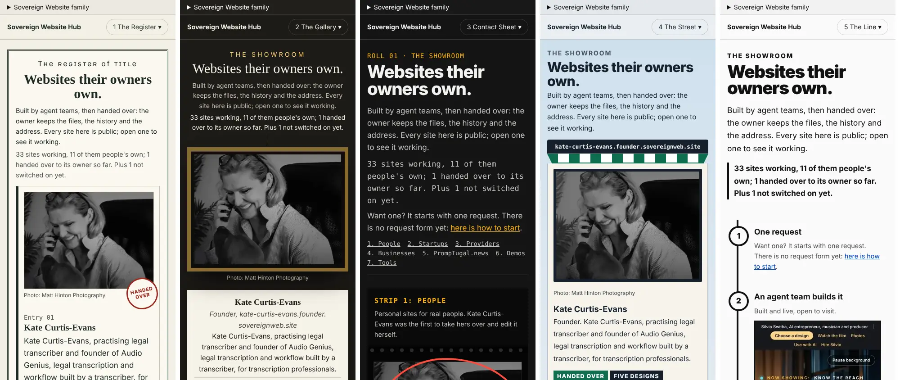
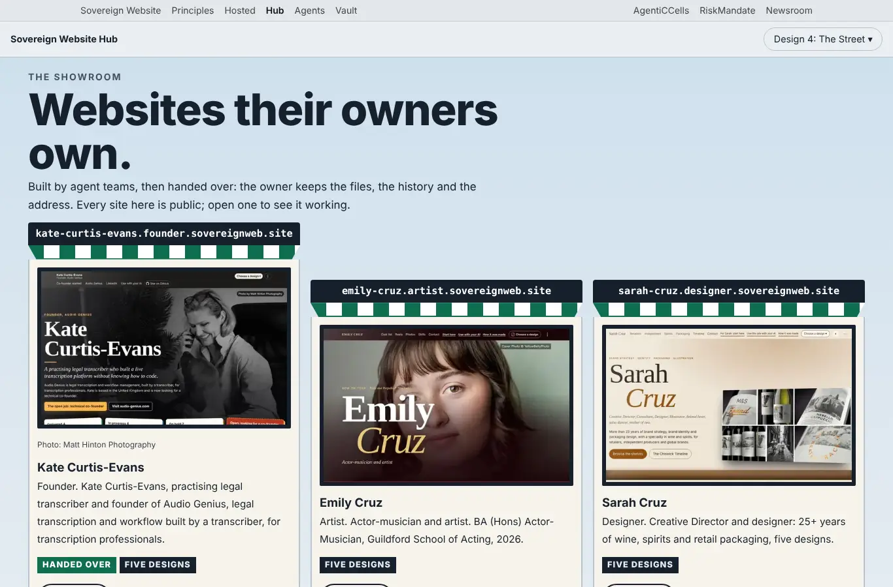

Synthetic users: the hub, round 8: "Would you want one?"
Site: https://hub.sovereignweb.site/ at 7bf77ff (v0.1.32). Run: 23 November 2026, about 13:00 UTC, by design.b.rounds. This is the first run on design.b's new question, from the brief: "Would you want one? If not, why not?" The brief's build had not reached the page yet, so this is the baseline. The review.
Method: Synthetic users, the hub's own test. One agent played five personas, each giving each design about thirty seconds: - P1, a self-employed professional with no website; - P2, a small-business owner who rents a site from a website builder; - P3, a creative who wants a portfolio; - P4, a low-vision reader; - P5, a sceptical friend.
These are simulations, and never replace a real person.
A fault in the run's inputs. The text given for /start/#get-one held only its heading, "Want a site like these?", so the agent read that section as empty. The live section goes on: "There is no request form yet. Read how it works and the prices on sovereignwebsite.ai, and see the sites made so far." The verdicts below quote the hub's own pages, so they stand; but none of the personas saw that /start/ points to prices.
Yes counts
| Design | P1 | P2 | P3 | P4 | P5 | Yes |
|---|---|---|---|---|---|---|
| The Register (home) | no | yes | no | no | no | 1/5 |
| The Gallery | no | no | yes | no | no | 1/5 |
| Contact Sheet | no | no | yes | no | no | 1/5 |
| The Street | no | yes | yes | yes | no | 3/5 |
| The Line | yes | no | no | no | no | 1/5 |
Why not, ranked (18 noes)
- No price, no form, nothing to actually do (6 noes; 11 of 25 answers, counting the caveats under the yeses): - P1, the Register: "It never says what it costs or who I'd be dealing with, and the only way in is 'There is no request form yet: here is how to start.' I'd need a price and a phone number before I'd bother." - P1, Contact Sheet: "I can see 'Want one?' straight away, but it says 'There is no request form yet' and nothing about the price, so there's nothing for me to actually do." - P1, the Street: "Plenty of shops to walk into but none of them is a trade like mine, and still no price or way to ask: 'There is no request form yet'." - P2, Contact Sheet: "It's all film strips and frame numbers; I can't tell what I'd get for a business, and there's no price to compare with my builder subscription." - P2, the Line: "It shows the steps but not the things I need: what it costs, whether I can bring my current domain, and who fixes it when something breaks. 'None at this step today' doesn't fill me with confidence either." - P5, Contact Sheet: "'There is no request form yet' and it doesn't say what it costs or who's behind it beyond an 'Operator' link. Interesting, not ready."
- Unproven: only one site handed over (4): - P5, the Register: "'1 handed over to its owner so far', and her 'Files' entry reads 'SovereignWebsite/Site__Founder__Kate-Curtis-Evans', which looks like their name, not hers. No price, no form; I'd wait." - P5, the Gallery: "Pretty frames, but of '33 sites working' only one has been handed over, and half the rooms are brochures, weather pages and 'made-up' companies." - P5, the Street: "One of the shops is 'Not switched on yet: waiting for the owner's Maps key', and only Kate's has been handed over. Come back to me when more people own theirs." - P5, the Line: "Step 4 says 'None at this step today' and step 5 has exactly one person in it. It's an honest page, but it's a pipeline with one finished product."
- Hard to read: size, forced dark theme, cut-off text (4): - P4, the Register: "On my phone the people's descriptions are cut off ('Actor-musician and artist. BA (Hons) Actor-Musician,...') and the 'Want one?' line is below the first screen; I'd struggle to find how to start." - P4, the Gallery: "I set my phone to light mode and this page stays dark, with small italic captions; and it doesn't say whether my own site would be readable for me." - P4, Contact Sheet: "Dark whatever I choose, the figures are in a typewriter font, and a red circle is drawn across Kate's photo. The 'here is how to start' link is easy to spot, though." - P4, the Line: "The headline is huge, but the text under 'One request', the bit that tells me how to start, is smaller and greyer than anything else near it."
- Can't see the portfolio work (2): - P3, the Register: "It reads like a land registry; Emily's and Sarah's sites are thumbnail-sized and their descriptions are cut off with '...'. Nothing here makes me feel what my portfolio would look like." - P3, the Line: "On my phone, Emily Cruz and Sarah Cruz at 'Five designs to choose from' are just names in boxes with no picture, so I can't see the portfolios I'd be comparing myself with."
- No real business like mine (1): - P2, the Gallery: "The business room has 'two made-up examples' and a 'redesign proposal'; I can't see a real business like mine that's running on one, and nothing about cost compared with what I pay now."
- GitHub sounds too technical (1): - P1, the Gallery: "Looks like an art exhibition, and 'Kate edits it herself on GitHub' tells me I'd be on my own with something I don't know how to use."
What made a persona lean towards yes
- The Register: "Held: By its owner, since 20 November 2026", under "Websites their owners own." (P2).
- The Gallery: Kate's live site in a gold frame, hung like a work in a show (P3).
- Contact Sheet: four portfolios side by side on desktop; "Want one?" on the first phone screen (P3).
- The Street: the owner's address on the awning over each window, starting with Kate's (P2, P3, P4).
- The Line: "1 One request" on the first phone screen, showing the whole route to "Handed over to the owner's GitHub" (P1).

